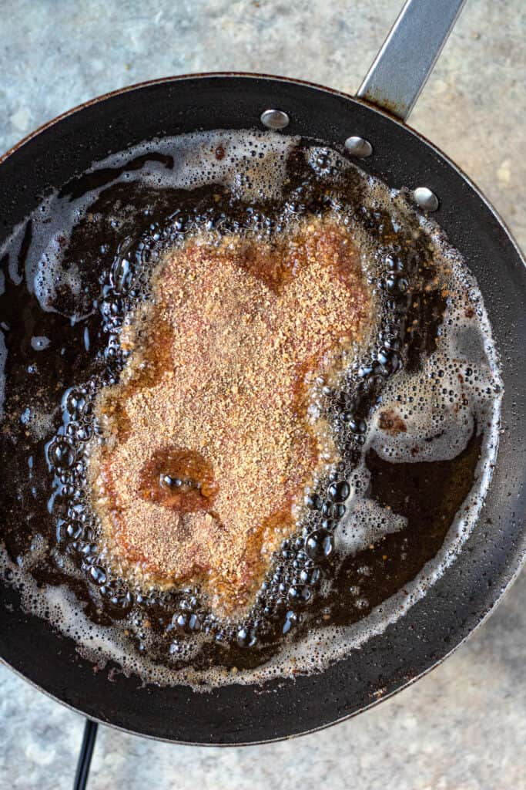
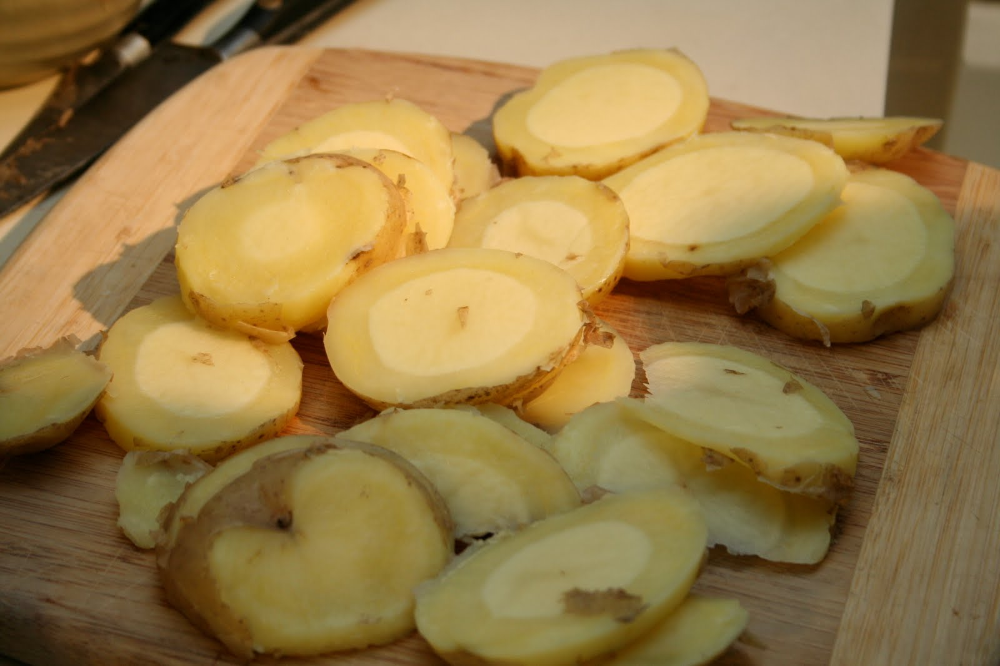

Directions
1. Wash the potato well and remove the skin with a potato peeler. Place it in a pot with enough water and add a pinch of salt. Boil for 20 minutes until it's cooked, but firm. Place in the refrigerator to cool while you prepare the rest.
2. Cook the rice the way you would normally (pot or other method), what's important is to have two full cups once you've finished cooking the rice. If you like, you can have it ready the day before.
3. Season the steaks with the adobo. Pass the steaks through the crumbled bread and apply pressure to each side until completely covered evenly. Place 1/4 of the cup of oil into a medium pan over medium heat. When the oil is hot, cook for 1 1/2 minutes on each side or until the ends have browned. Be careful not to overcook the meat as the bread cooks quickly.
4. When they're ready, set them on paper towels to remove the excess oil. Keep warm.
 5. To prepare the salsa, wash and dice the onions and tomatoes into small cubes and roughly chop parsley. Combine in a medium sized bowl and set aside.
5. To prepare the salsa, wash and dice the onions and tomatoes into small cubes and roughly chop parsley. Combine in a medium sized bowl and set aside.
6. Remove the potatoes from the refrigerator and chop into approximately 1/2 inch slices. Add the other 1/4 cup of oil to a non-stick pan and heat over medium-high. When the oil is hot, add the potatoes and fry for approximately 2 minutes on each side or until they've browned. Remove and set over paper towels to absorb the oil.
7. While the potatoes fry, sprinkle cooking spray in a small pan and fry the eggs to your preference. Season with salt and pepper.
8. Once the potatoes, rice, steaks, and eggs are ready you can begin to put together the silpancho.
9. On a plate, place one cup of rice and arrange the potatoes off to the side. Then, atop of the rice, cover with the steak and egg. Place a healthy serving of salsa overtop the steak and egg, and enjoy!